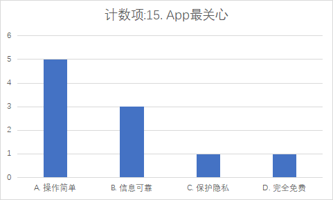
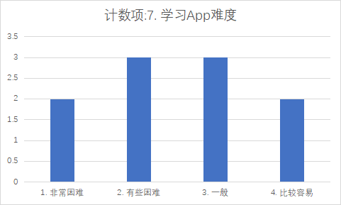
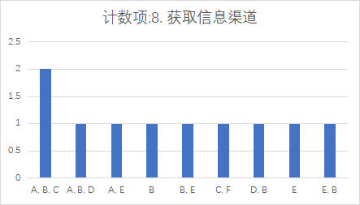
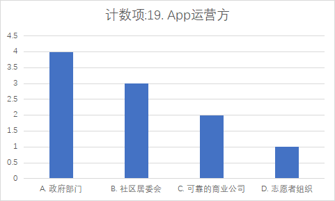
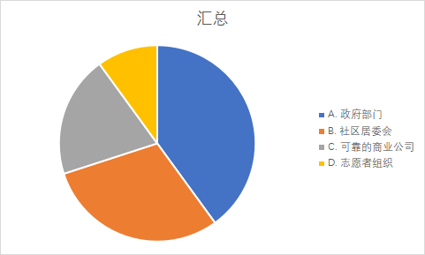
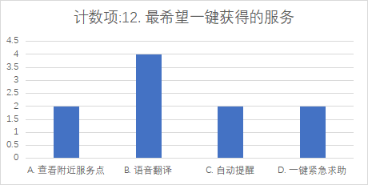
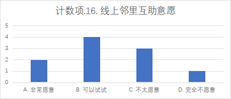
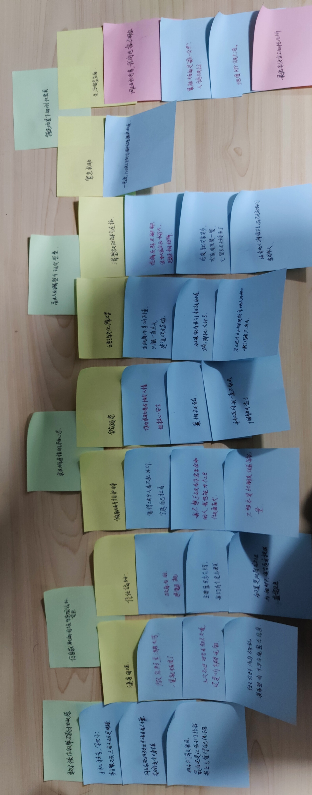
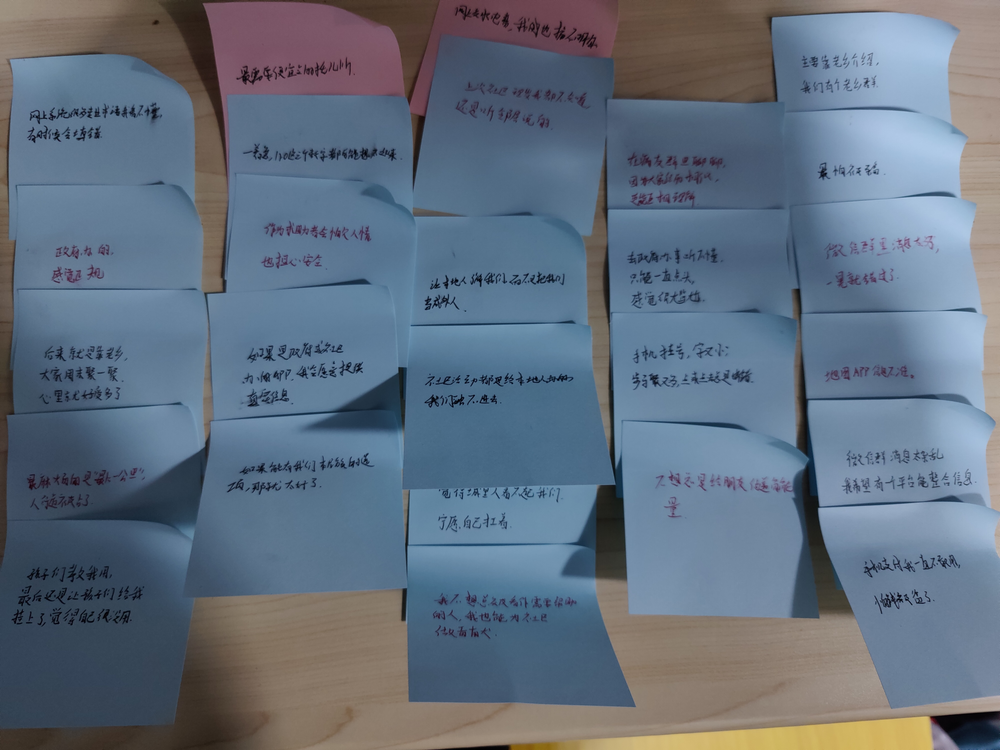

SDU CS Man !!!
山东大学计算机科学与技术学院 人机交互课程 小组搭建网站。
了解项目详情团队介绍
辛煜
项目经理 (PM)，负责项目规划与协调、问卷设计与数据整理。
闫文彪
用户体验设计师 (UX Designer)，负责网站设计与搭建、原型制作。
杨昊霖
用户研究员 (User Researcher)，负责访谈执行与记录稿整理。
项目提案
项目名称： “融益坊”
项目简介： 本项目旨在设计一款智能手机App，为城市中的边缘化群体（如独居老人、外来务工人员、少数民族、残障人士等）提供一个集中、易用的信息与服务平台。该App将整合社区服务、医疗资源，提供多语言支持和个性化提醒功能，以解决他们面临的信息不对称、沟通障碍和紧急求助渠道缺失等问题，提升他们的生活质量和社会融入感。
目标用户： 城市中因年龄、语言、技能或身体原因而在信息获取和数字服务使用上存在困难的群体。
核心功能
- 信息中心： 聚合社区通知、福利政策、健康讲座等官方信息，并提供语音播报功能。
- 服务导航： 提供无障碍优化的地图，标注医院、社区食堂等便民服务点。
- 沟通无碍： 内置语音翻译工具，辅助用户与医生、社区工作人员等进行沟通。
- 智能提醒： 个性化设置吃药、复诊、缴费等重要事项的提醒。
- 一键求助： 紧急情况下快速联系家人、社区网格员或急救中心。
数据收集计划
1. 半结构化访谈
目的： 深入、定性地了解目标用户在日常生活中获取信息、服务和支持时的具体经历、感受、挑战和应对策略。我们希望听到他们的故事，而不仅仅是简单的答案。
方法： 邀请4位来自不同背景（独居老人、外来务工人员、少数民族、残障人士）的目标用户进行20-30分钟的一对一访谈。访谈过程将围绕日常生活习惯、信息获取渠道、服务使用经历以及紧急情况应对等主题展开，并根据用户的回答进行灵活追问，以挖掘深层需求和痛点。
2. 问卷调查
目的： 定量地收集用户基本信息、行为频率和态度偏好，以验证访谈中得到的初步洞见，并为用户画像提供数据支持。
方法： 设计一份包含约20个问题的在线问卷，涵盖用户背景、数字技能、服务需求、信任顾虑等多个维度。通过线上社区和线下走访等方式，向10位以上的潜在用户分发并回收问卷。数据将用于分析用户群体的普遍规律和核心需求。
调查问卷详情
数据收集结果
访谈记录稿（只保留主要内容）
访谈一：李大爷（68岁，独居老人）
访谈目的：了解独居老人在日常生活、信息获取和数字设备使用上的困境。
访谈记录：
访谈者：您好，李大爷，您平时获取社区活动或政策通知主要通过什么方式？
李大爷：主要是看楼下公告栏，还有邻居告诉我。有时候也在微信群里看到，但那东西太多，我也分不清哪个是真的。
访谈者：您会使用智能手机里的政务类App吗？
李大爷：政府推荐的那个我信得过，但操作太复杂，我怕点错。上次挂号挂到一半就退出来了，看不清按钮字太小。
访谈者：您希望这样的App有什么功能？
李大爷：能有图文说明最好，像那种一步一步教的，还有能提醒我领药、交费。还有一个，就是不能乱扣钱。
访谈者：谢谢您宝贵的意见。
访谈二：王姨（35岁，外来务工人员）
访谈目的：了解外来务工人员在城市生活中的信息障碍与服务需求。
访谈记录：
访谈者：您好，请问您平时获取社区或政府信息的途径是什么？
王姨：都是老乡群发的，还有中介说的。我看那些通知，字太多太难懂。
访谈者：您信任这类App或线上平台吗？
王姨：要是政府出的，我就信。外面的我不敢用，怕被骗。
访谈者：您觉得需要哪些功能？
王姨：要是能有语音播报最好，我家乡话的那种我能听懂，还有托儿所信息、租房消息，能查就方便多了。
访谈三：赵姐（42岁，少数民族餐馆经营者）
访谈目的：了解少数民族群体在政策理解与服务获取中的障碍。
访谈记录：
访谈者：您好，您平时了解政策和服务信息主要通过什么渠道？
赵姐：我都听朋友说的。那些网站太复杂，汉字我看不全懂。
访谈者：那您希望App有哪些帮助？
赵姐：如果能有民族语言或者图片解释就好了。最好能双语切换。还希望有个能匿名提意见的地方。
访谈者：您认为哪些机构发布的信息最值得信任？
赵姐：政府的、民族事务委员会的我最信。别人做的我不敢用。
访谈四：小陈（28岁，残障人士）
访谈目的：了解残障人士在使用手机应用中的体验与无障碍需求。
访谈记录：
访谈者：您好，请问您平时使用手机进行生活服务方便吗？
小陈：还行吧，但有些App没考虑我们，按钮太小、语音读不出来。
访谈者：那您觉得一个服务类App最重要的是什么？
小陈：无障碍功能。比如读屏能读出来，语音能控制。还有紧急求助，一键就能发位置那种。
访谈者：如果这样的App上线，您会使用吗？
小陈：当然，我希望能更方便点。希望能有我们参与的设计。
问卷数据结果
| ID | Q1 年龄 | Q2 身份 | Q3 居住时长 | Q4 主要语言 | Q5 手机使用频率 | Q6 常用App任务 | Q7 学习App难度 | Q8 信息获取渠道 | Q9 服务获取难度(医院/补贴/咨询/志愿) | Q10 办事障碍 | Q11 需提醒类型 | Q12 最希望一键获得的服务 | Q13 紧急求助方式 | Q14 官方App求助意愿 | Q15 最关心 | Q16 线上互助意愿 | Q17 授权位置信息 | Q18 期望的设计 | Q19 期望的运营方 | Q20 其他建议 |
|---|---|---|---|---|---|---|---|---|---|---|---|---|---|---|---|---|---|---|---|---|
| 1 | 71岁及以上 | 退休/独居老人 | 5年以上 | 普通话 | 每天用，但主要几个功能 | 聊天、看新闻 | 2（有些困难） | 公告栏 / 邻居 / 社区微信群 | 5 / 4 / 3 / 2 | 流程太复杂 / 语言不通 / 排队时间长 | 吃药提醒 / 复诊提醒 | 自动提醒 / 用药提醒 | 给家人打电话 | 5（非常愿意） | 操作是否足够简单 | 不太愿意（偏保守） | 查附近服务点 / 紧急时共享位置 | 页面简洁/大图标展示 | 建议政府部门运营 | 字更大一些 |
| 2 | 41-55岁 | 外来务工人员 | 1-5年 | 家乡方言 | 每天用，但主要几个功能 | 聊天/短视频/购物 | 3（一般） | 老乡群 / 中介 | 4 / 5 / 5 / 3 | 语言不通 / 流程不清晰 | 吃药/复诊/活动提醒 | 语音翻译 / 托儿所信息 | 给家人打电话 | 4（比较愿意） | 信息是否真实可靠 | 可以试试看 | 同意在找服务时授权位置 | 大字号/希望有语音翻译 | 建议社区居委会参与运营 | 希望有老乡在里面帮忙 |
| 3 | 40岁以下 | 残障人士 | 5年以上 | 普通话 | 每天都用 | 聊天/购物/导航/工作 | 4（比较容易） | 微信群 / App / 朋友 | 4 / 4 / 5 / 3 | 机器或流程不无障碍 / 找不到窗口 | 吃药提醒 / 复诊提醒 | 查看附近服务点 | 拨打110/120 | 5（非常愿意） | 操作是否足够简单 | 非常愿意参与线上互助 | 愿意授权位置（用于导航/求助） | 大字号/大图标/支持方言与语音/页面简洁 | 政府部门 | 无障碍地图要准确 |
| 4 | 56-70岁 | 少数民族 | 5年以上 | 少数民族语言 | 偶尔用 | 看电视 / 社区信息 | 1（非常困难） | 社区通知 / 公告栏 | 5 / 4 / 4 / 2 | 语言不通 / 流程复杂 | 语音播报 / 活动提醒 | 语音翻译 | 向邻居 / 社区求助 | 3（不确定） | 信息是否真实可靠 | 完全不愿意（对线上互助持慎重态度） | 不愿意提供位置信息（隐私担忧） | 支持方言与语音/页面简洁 | 建议由志愿者组织参与运营 | |
| 5 | 41-55岁 | 全职/兼职工作者 | 1-5年 | 本地方言 | 每天都用 | 聊天/看新闻/支付 | 4（比较容易） | 电视 / 手机 / 家人 | 3 / 3 / 4 / 2 | 排队时间长 / 流程繁琐 | 复诊/缴费提醒 | 一键紧急求助 | 拨打110/120 | 4（比较愿意） | 是否免费 / 隐私保护 | 可以试试看 | 在紧急时愿意授权位置 | 大图标/页面简洁 | 偏好可靠商业公司或社区支持 | 广告少一点 |
| 6 | 71岁及以上 | 退休/独居老人 | 5年以上 | 本地方言 | 每天用，但主要几个功能 | 聊天/看新闻 | 2（有些困难） | 公告栏 / 社区工作人员 | 5 / 3 / 3 / 1 | 流程复杂 / 找不到正确窗口 | 用药提醒 / 活动通知 | 自动提醒 / 附近服务点 | 给家人打电话 | 5（非常愿意） | 操作简单 | 不太愿意（对线上互助保留） | 愿意在找服务时授权位置 | 大字体/大图标 | 希望居委会能提供上门教学 | |
| 7 | 40岁以下 | 外来务工人员 | <1年 | 家乡方言 | 每天都用 | 聊天/购物/短视频 | 3（一般） | 线上群组 / 老乡 | 4 / 5 / 5 / 3 | 语言/流程不清 | 语音翻译 / 活动提醒 | 语音翻译 | 给家人打电话 | 4（比较愿意） | 是否完全免费 | 可以试试看 | 愿意授权位置用于服务查找 | 大字体/语音支持 | 希望政府部门运营 | 希望能帮忙找工作 |
| 8 | 56-70岁 | 独居且残障 | 5年以上 | 普通话 | 偶尔用 | 看电视/朋友 | 1（非常困难） | 朋友 / 社区 | 5 / 3 / 3 / 1 | 机器/流程不无障碍 | 活动/托付提醒 | 一键紧急求助 | 使用App一键求助 | 5（非常愿意） | 操作简单 | 不愿意（担心安全） | 仅在紧急时授权位置 | 大字体/大图标/语言支持/页面简洁 | 建议政府部门主导 | |
| 9 | 41-55岁 | 少数民族 / 全职 | 5年以上 | 少数民族语言 | 每天使用 | 聊天/短视频/工作相关 | 3（一般） | App / 朋友 | 4 / 4 / 4 / 3 | 语言障碍 / 不知道流程 | 语音翻译 / 活动提醒 | 语音翻译 | 拨打110/120 | 4（比较愿意） | 信息是否真实可靠 | 可以试试看 | 愿意授权位置（用于导航/求助） | 提供方言与语音支持 | 倾向于可靠商业公司或政府背书 | 希望法律咨询 |
| 10 | 71岁及以上 | 退休老人 | 5年以上 | 普通话 | 每天用，但主要几个功能 | 聊天/看新闻 | 2（有些困难） | 公告栏 / 社区通知 | 4 / 3 / 2 / 1 | 排队/流程/语言问题 | 复诊/缴费提醒 | 查看附近服务点 | 向邻居求助 | 4（比较愿意） | 操作是否足够简单 | 不太愿意 | 仅在查附近服务点或紧急时授权 | 大字体/页面简洁 | 居委会可做上门辅导 | 希望有教学 |
主要发现：
① 大多数受访者每日使用手机，但功能集中于聊天与视频娱乐；
② 超过半数用户表示学习新App存在一定困难；
③ “语音翻译”“自动提醒”“一键求助”是最受欢迎的功能；
④ 用户对政府与社区机构信任度最高，建议官方主导推广。
数据结果分析
1. 问卷数据分析
本次问卷调查共收集了10份有效样本，旨在量化了解目标用户在信息获取、服务使用及App偏好方面的现状与需求。
1) 人口统计数据
参与本次问卷调查的10位用户背景多样，基本覆盖了我们项目的主要目标群体。
年龄分布
- 40岁以下用户占20%
- 41-55岁用户占30%
- 56岁及以上的中老年群体占比达到50%
身份构成
- 退休/独居老人占50%
- 外来务工人员占20%
- 残障人士占20%
- 少数民族占20%
主要语言
- 60%的用户主要使用普通话
- 40%的用户依赖本地方言或家乡/少数民族语言
2) 重要发现
在使用App最关心的问题中，半数用户选择了“操作是否足够简单”。
在 学习App难度 的问题是中，71岁以上的老年用户普遍反馈学习App“有些困难”。56-70岁的少数民族用户认为“非常困难”
在 获取信息渠道 问题中，“小区公告”、“社区通知”、“亲友告知”等传统渠道是主要信息来源。
在 期望的APP运营方 问题中, 用户对政府或社区官方背景的App表现出极高的意愿。
 “语音翻译”在外来务工和少数民族用户中，获得了与“自动提醒”、“一键紧急求助”同等甚至更高的关注度。
在“线上邻里互助意愿”中，选择“非常愿意”的用户比例不高，更多用户选择了“可以试试看”或“不太愿意”，显示出普遍的观望和犹豫心态。
3) 总结与洞察
通过问卷分析，我们清晰地看到目标用户在数字化生活中面临的“三重鸿沟”： 首先是数字技能鸿沟，无论年龄大小，操作复杂是他们接纳新应用的最大障碍； 其次是信息获取鸿沟，他们严重依赖低效的线下和社交渠道，导致信息闭塞，而对权威、可信的官方信息平台有强烈需求； 最后是情感融入鸿沟，虽然他们渴望与社区建立连接，但在实际行动（如邻里互助）中又因安全感缺失和害怕麻烦别人而表现得十分谨慎。 这些发现印证了我们设计一个“集中、易用、可信”平台的必要性，并为功能设计的优先级（简化操作>功能堆砌）提供了有力的数据支持。
2. 访谈数据分析
我们通过对4位不同背景的用户进行深度访谈，采用了亲和图法进行分析。从访谈记录稿中提取了超过30条反映用户观点、行为和感受的关键引述，并进行归纳整理，确定了用户需求。
1)亲和图的制作过程
-
第一步：提取原始数据
我们从访谈记录稿中提取了超过30条反映用户观点、行为和感受的关键引述，并将它们记录在独立的“便利贴”上。
 -
第二步：归纳与综合
我们将意思相近或属于同一主题的便利贴聚集在一起,逐渐形成了几个核心的主题群组。
-
第三步：提炼主题与构建结构
为每个群组命名，提炼出能概括其核心内容的主题，并整理出层级关系，最终形成了亲和图。

2)最终亲和图
-
核心主题一：数字操作的障碍与挫败感
如：“手机挂号，字又小，步骤又多，点来点去总是出错”，用户核心需求是“App操作要简单，最好能支持语音操作”。
-
核心主题二：信息获取的困境与信任偏好
用户面临“微信群里消息太多，一晃就错过了”的渠道困境，并高度信任“政府办的，感觉正规”的信息。
-
核心主题三：求助与连接的矛盾心态
用户因“怕麻烦别人”和担心安全而谨慎，同时渴望“我也能为社区做贡献”。
-
核心主题四：融入的渴望与现实的壁垒
语言和文化障碍明显，例如“去政府办事听不懂，只能一直点头”，同时渴望“让本地人了解我们”。
-
核心主题五：特定场景下的刚性需求
包括“紧急求助”、无障碍出行信息（如电梯和人行道信息）和生活服务（如托儿所）。
3)总结与洞察
访谈数据的亲和图分析让我们深刻体会到，用户的困难远不止于“不会用手机”。 我们看到了强烈的自尊心和对“麻烦别人”的恐惧，这解释了为何他们在遇到困难时宁愿独自承受也不愿轻易求助。 我们还发现了基于身份认同的信任圈（如老乡群、病友群），这既是他们的支持系统，也反映出他们与主流社区之间的隔阂。 一个令人意外的发现是，即便是像小陈这样的年轻用户，也渴望从被帮助者转变为贡献者，寻求一种平等参与的社区关系。 这些质性洞察补充了问卷数据，揭示了用户行为背后复杂的情感和心理动机。 因此，我们的App不仅要解决功能层面的问题，更要在设计中体现尊重、包容和平等，营造一个安全、有尊严的数字空间，这才是产品能否成功的关键。